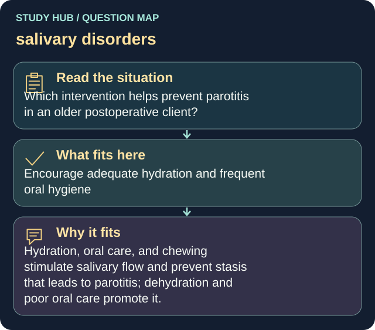

Which intervention helps prevent parotitis in an older postoperative client?
Answer
Encourage adequate hydration and frequent oral hygiene
Reasoning
Hydration, oral care, and chewing stimulate salivary flow and prevent stasis that leads to parotitis; dehydration and poor oral care promote it.
Why the other answers do not fit
- Restrict fluids to rest the glands
- Provide only a bland diet requiring no chewing
- Withhold mouth care to reduce stimulation
Shared reasoning for choices without a separate note: Hydration, oral care, and chewing stimulate salivary flow and prevent stasis that leads to parotitis; dehydration and poor oral care promote it.
